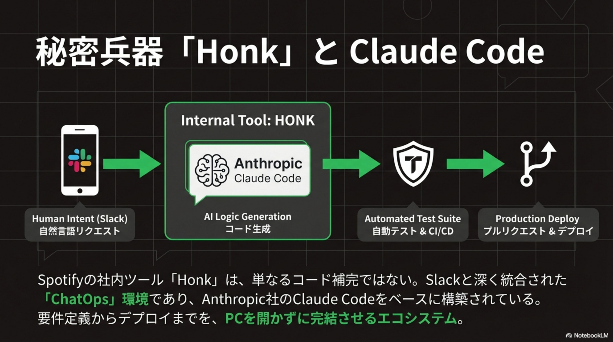
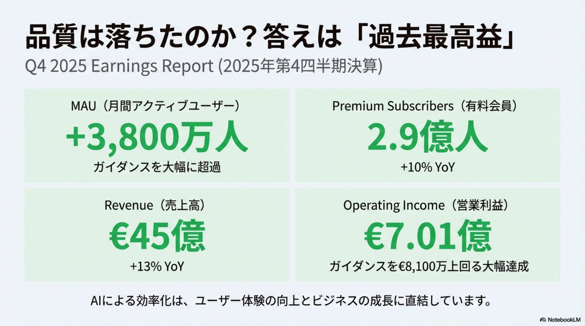
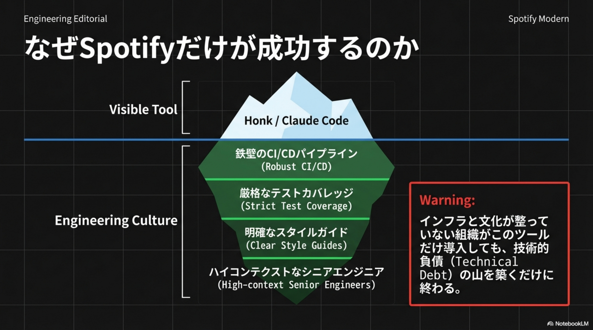
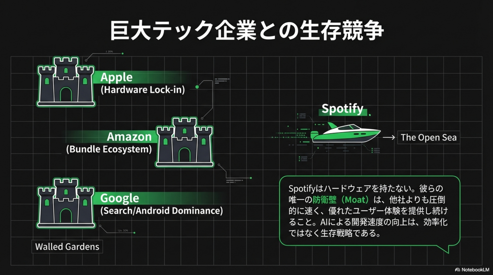

概要
トップ開発者のコード量
新機能・変更
過去最高・ガイダンス大幅超
+3,800万 / 過去最高
CEO発言：The Honk Pivot
実験ではない。これは成長エンジンだ。
秘密兵器「Honk」と Claude Code

🤖 PCを開かずに完結するエコシステム
Human Intent (Slack): 自然言語でリクエスト
AI Logic Generation (HONK): Claude Codeベースでコード生成
Automated Test Suite: 自動テスト & CI/CD
Production Deploy: プルリクエスト & デプロイ
Honkは単なるコード補完ではない。Slackと深く統合された「ChatOps」環境であり、要件定義からデプロイまでを完結させる。
通勤中にバグ修正完了。「ChatOps」のリアル
役割の逆転：実装から指揮へ

🔄 Spotify Model 2.0
Human Role: ロジック記述 → 意図定義・設計レビュー
AI Role: コンパイル・実行 → 実装・修正・リファクタリング
Bottleneck: タイピング速度 → 人間の意思決定速度
エンジニアの仕事は「コードを書くこと」から「AIが書いたコードの品質と方向性を担保すること」へシフトした。
なぜSpotifyだけが成功するのか

🧚 氷山の下にある文化
Visible Tool: Honk / Claude Code（見える部分）
Engineering Culture（見えない基盤）:
• 鉄壁のCI/CDパイプライン
• 厳格なテストカバレッジ
• 明確なスタイルガイド
• ハイコンテクストなシニアエンジニア
10xエンジニアの死、10x指揮官の誕生
The Artisan（職人）
Coding in isolation
コーディング能力がプレミアムスキル。タイピング速度と構文知識が価値の源泉。
The Orchestrator（指揮官）
Directing Agents & Architecture
プロダクトセンス、アーキテクチャ設計、レビュー能力がプレミアムスキルに。
「中途半端なAI利用」という罠
巨大テック企業との生存競争

🏟️ Spotifyの防衛壁（Moat）
Apple（Hardware Lock-in）、Amazon（Bundle Ecosystem）、Google（Search/Android Dominance）はそれぞれ「城壁（Walled Gardens）」を持つ。
Spotifyはハードウェアを持たない。彼らの唯一の防衛壁は、他社よりも圧倒的に速く、優れたユーザー体験を提供し続けること。
AIによる開発速度の向上は、効率化ではなく生存戦略である。
業界の反応：熱狂と懸念
💚 熱狂の声
- "Design and judgment are finally taking the front seat. The era of syntax errors is over."
- 「置き換え」ではなく「拡張」として捉える楽観的な見方が主流
❌ 懸念の声
- "Show me the bug count in 6 months. Technical debt is invisible until it explodes."
- 労働環境の変化、長期的な品質維持への不安も根強い
2026-2028 ロードマップ予測
2026 (Now)
Early Adopters（Spotify等）。Big Techが社内利用を確認。
2027
Hiring Shift。「AI Direction」が採用の核心基準に。「Manual Coding」が求人から消える。
2028
New Standard。手動コーディングはアセンブリ言語のようなニッチスキルに。
組織が取るべき3つのアクション
Build the Rails
AIにコードを書かせる前に、自動テスト環境を完璧にする。CI/CDパイプラインとテストカバレッジが成功の前提条件。
Shift the Seniors
シニアエンジニアの評価軸を「コード行数」から「レビュー数・設計品質」へ変更する。
Define the Boundary
人間が判断すべき領域（仕様・承認）と、AIに任せる領域（実装・テスト）を明確に区分する。
The Best Code is No Code.
人間が「書く必要をなくした」コードである。
The Shift
シニアがコーディングから解放。AI（Honk/Claude Code）でモバイルから本番デプロイ
The Result
50+新機能リリース。MAU 7.51億・営業利益€7.01億で過去最高を更新
The Warning
文化とインフラなきAI導入は技術的負債の山。Middle Trapに陥らないこと